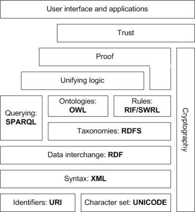

“I have a dream for the Web
[in which computers] become capable of analyzing all the data on the Web.”
– Tim Berners-Lee, 1999
The problem is the entire web is dependant on making money from humans.
How do you make money from the web?
“Google reserves the right in its discretion to include advertising in the content returned through the APIs.”
– Google APIs Terms of Service, 2011
“1. Scrape, build databases or otherwise create permanent copies of such content.”
– Google APIs Terms of Service, 2011
Don’t get me wrong, Google has been able to provide amazing services for free from the revenue they receive in advertising to humans.
...but Web 3.0 is still mostly controlled by large organization’s.
The only way Web 3.0 can work is making it accessible for everyone to collect data and in-turn create their own end-points.
Much like curating your own content for your blog.
By providing data, even smaller sets of data that people find valuable you can eventually make money from your part of the web through subscription-based services.
Tim Berners-Lee has had a solution for Web 3.0

The Semantic Web Stack
Now 14 years old and over-complicated.
The solution is much simpler.
For example.
The future of Web 3.0 will come from the tools that empower people to create end-points easily on their own.
But in a world where data is currency why would companies allow you to keep your own data?
Wolfram|Alpha, Wolfram Cloud
Web
↑
Scrape
↓
Private Clouds, NAS, etc.
This begs a question though on private data.
Are you more comfortable with your private data being stored in a large organization’s cloud, or your own?
Either way, there are pros and cons in both.
And so what are you going to create as your Web 3.0 end-point for the new web?
^_^
UFO Technologies
Patrick Schroen
Founder and Lead Programmer
@pschroen